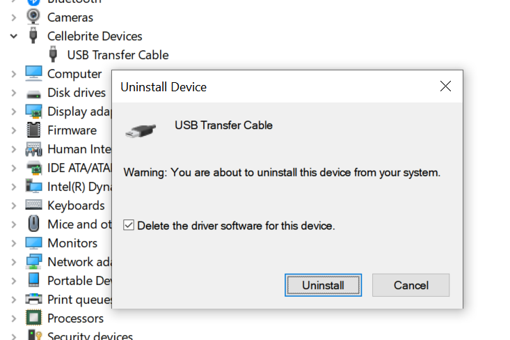

Using Device Manager, locate the USB Transfer Cable item,
right-click and select Uninstall device (or click the Uninstall
device button).
Ensure that the Delete the driver software for this device
check-box is checked. If not, the driver may be re-installed.